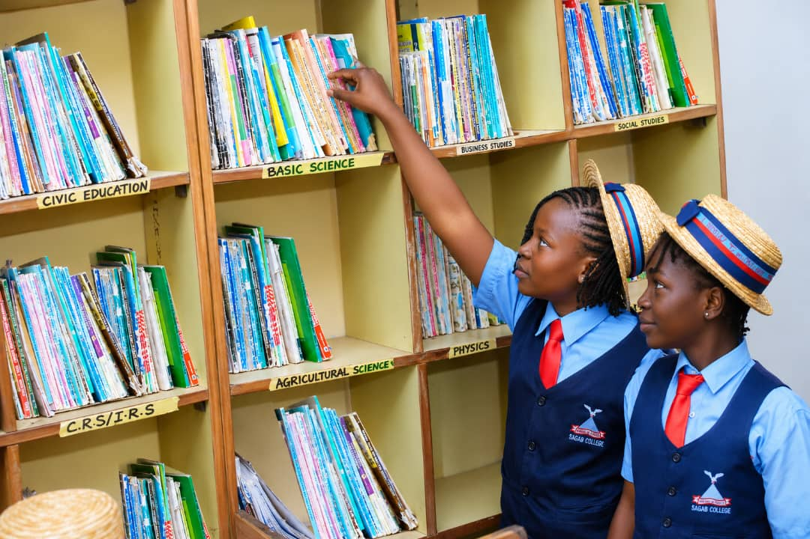
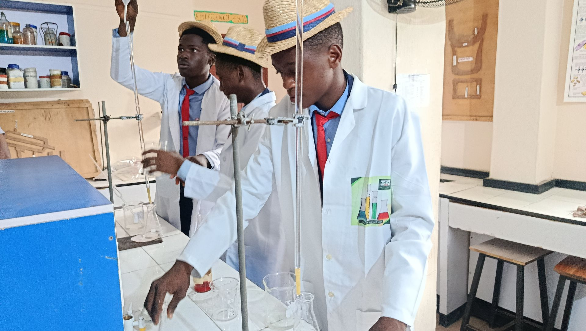
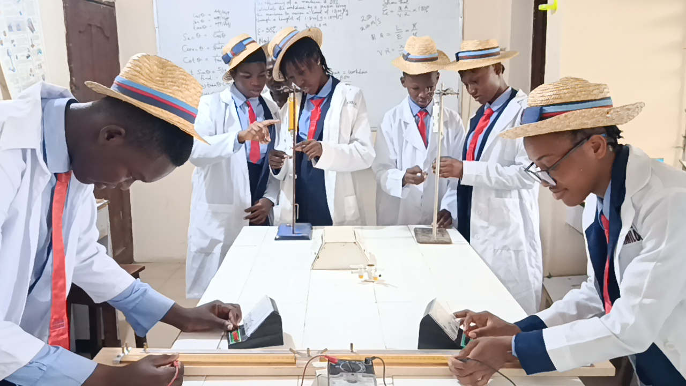
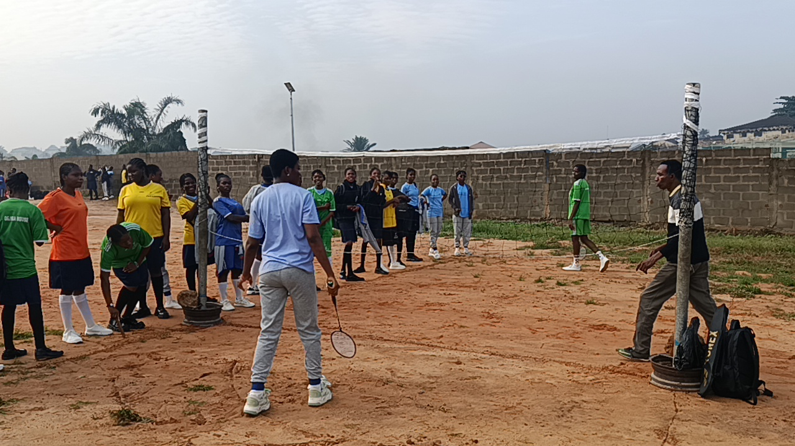
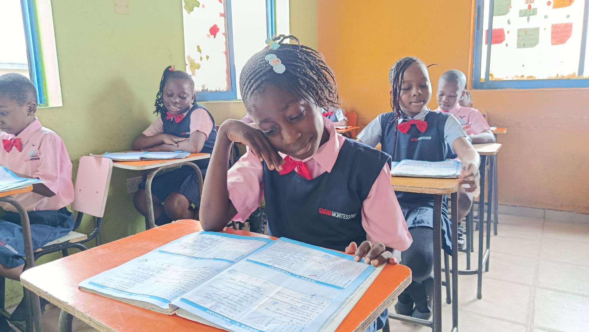
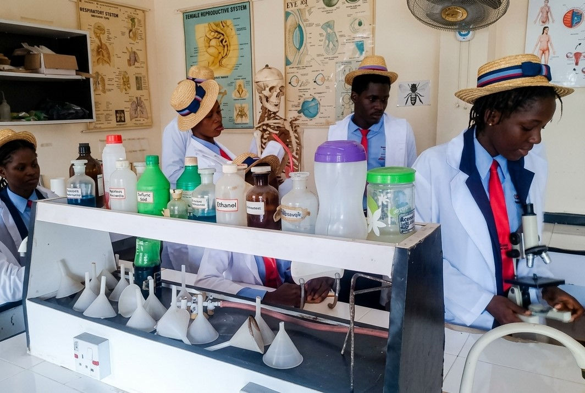
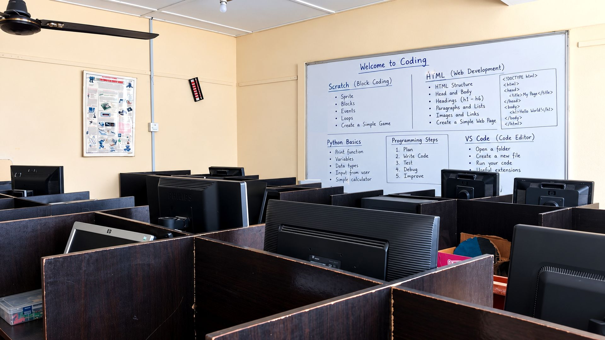
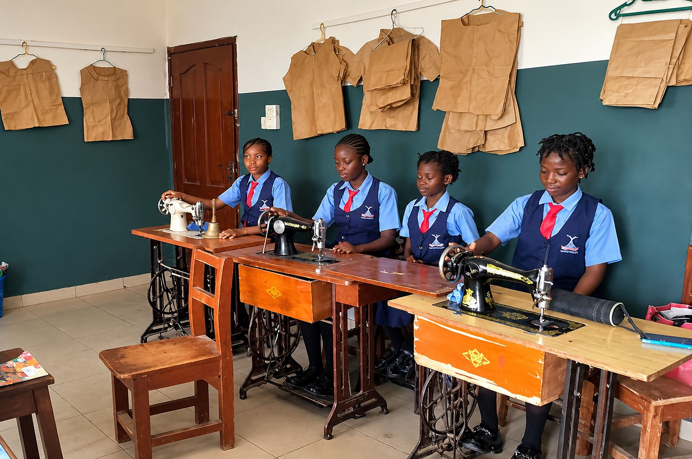
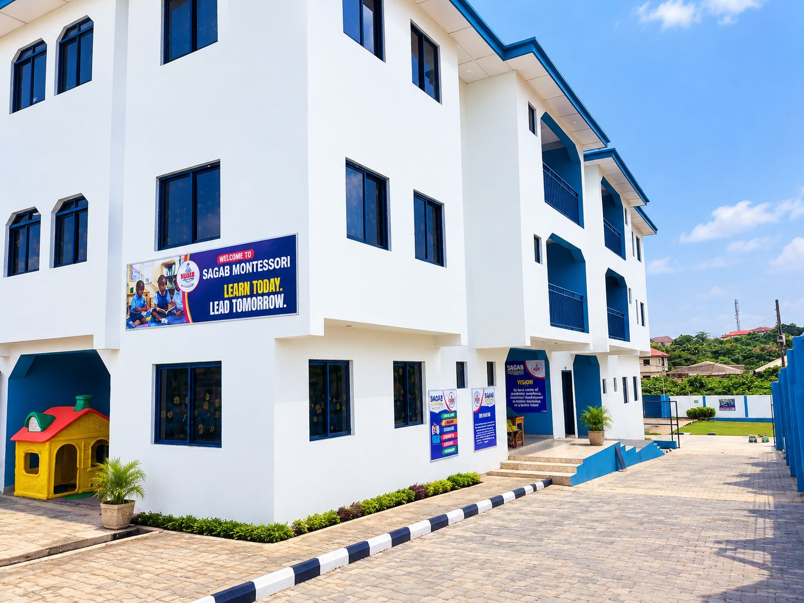
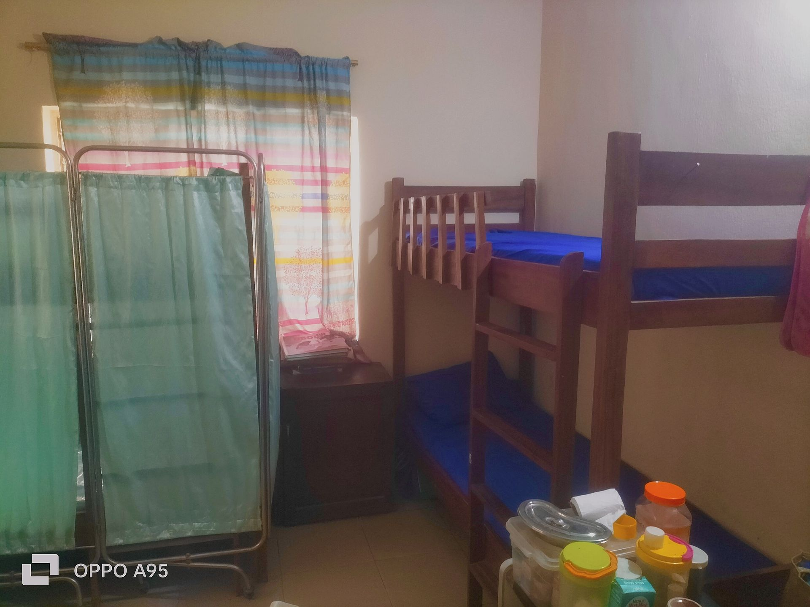

Built for discovery
Spaces designed for learning, discovery and growth.
Sagab Schools has two neighbouring schools in Solomade Estate, Ikorodu, Lagos: Sagab Montessori School for pre-school and primary pupils, and Sagab College for junior and senior secondary students.
Each facility below is part of everyday school life, from science practicals and library research to sport, boarding and external examinations.
Arrange a school visitExplore our spaces
A school made for every kind of learner.
Purposeful spaces help students investigate ideas, build confidence, collaborate and develop their talents.

Sagab College Library
Students use the library for reading, research, assignments and quiet independent study during the school day.

Chemistry Laboratory at Sagab College
Science students carry out experiments and the chemistry practicals required for the WASSCE and NECO examinations.

Physics Laboratory at Sagab College
Students take measurements, run guided experiments and prepare for their physics practical examinations.

Sports Facilities at Sagab Schools
Space for football, athletics and the inter-house sports competition, where students build fitness and team spirit.

Classrooms at Sagab Schools
Montessori classrooms are set up for hands-on learning, while College classrooms host daily lessons for every JSS and SSS class.

Biology Laboratory at Sagab College
Students study living things through specimens and microscope work, and carry out the biology practicals required for the WASSCE and NECO examinations.

ICT Laboratory at Sagab College
Students build digital skills in ICT, programming and AI, with hands-on time at the computers in every lesson.

Garment Making Laboratory
Students learn to measure, cut and sew, turning their own designs into finished pieces of clothing.

Boarding Hostel at Sagab College
A home away from home for boarders, with house staff on hand day and night and supervised evening prep.

Sick Bay at Sagab Schools
Our school nurse cares for students who feel unwell or get hurt during the day, in a quiet space set aside for rest and first aid.
Also on site
More facilities at Sagab.
Beyond the classroom, these spaces support examinations, practical life skills and creative work.
Examination hall
A hall approved by WAEC for external examinations, where Sagab College students sit the WASSCE, NECO SSCE and their internal examinations.
Home Economics Lab
A practical space where students learn food and nutrition, cooking and other everyday home management skills through hands-on lessons.
Arts Studio
A creative space for drawing, painting and fine art, where students explore ideas and develop their artistic talents.
See Sagab for yourself
Visit the spaces where learning comes to life.
Speak with our team to arrange a visit or begin your child’s admission journey.
Begin admission Call +234 706 629 7062